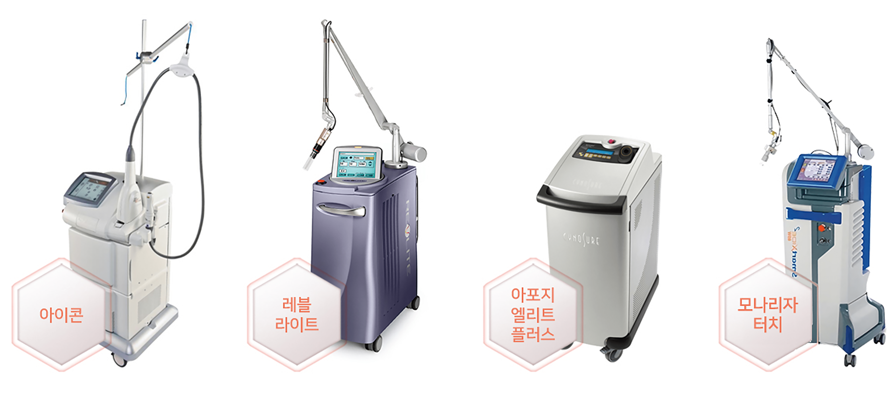
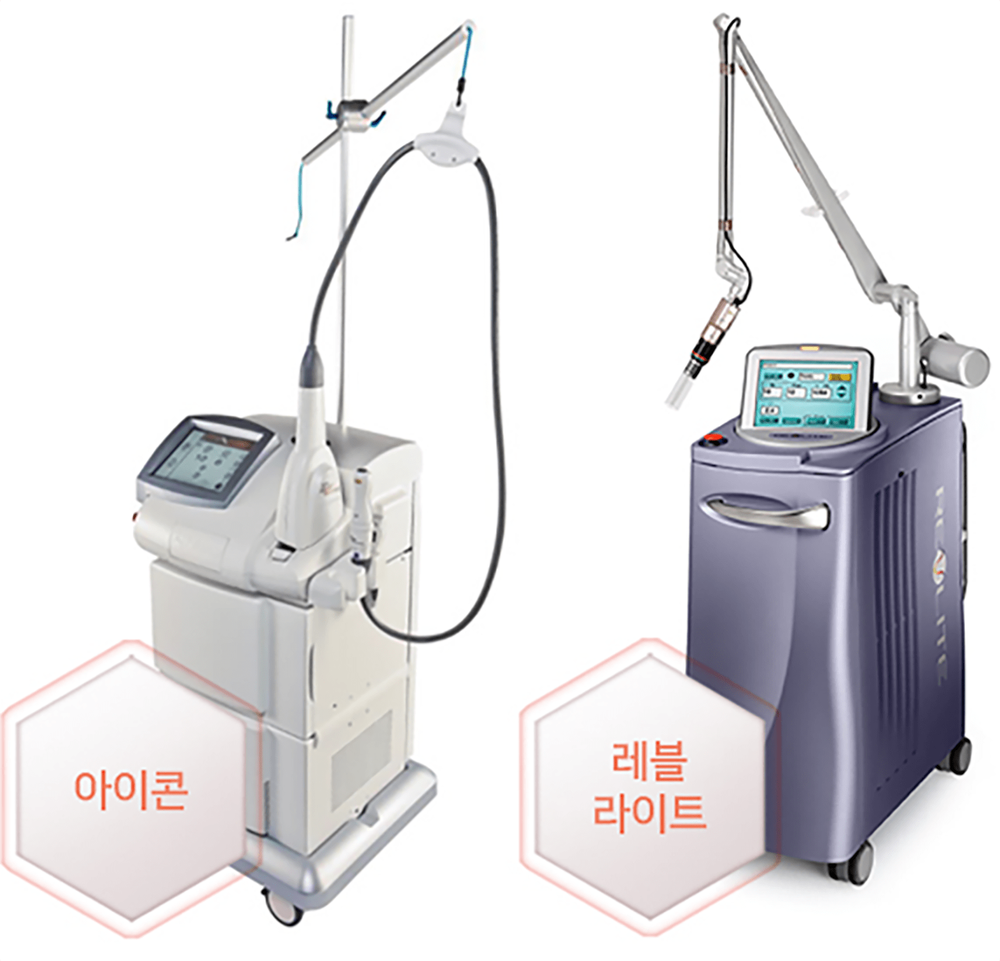
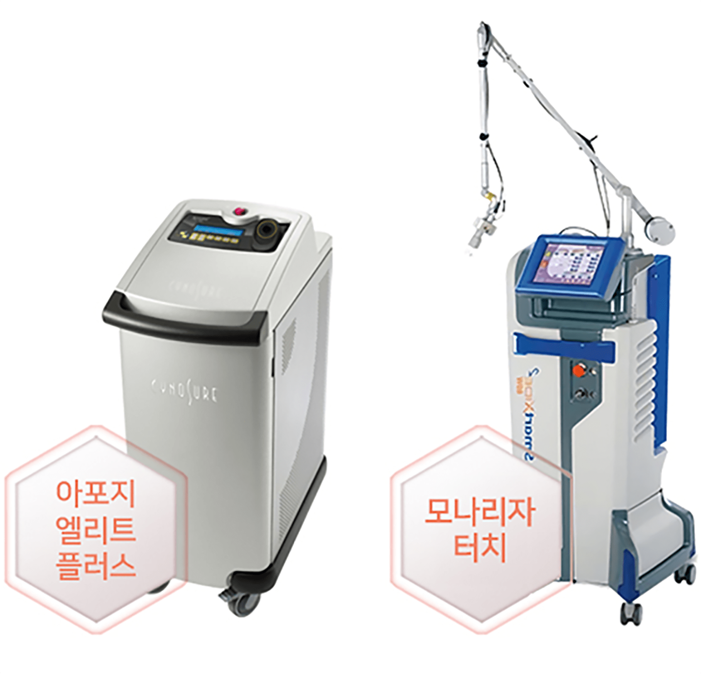
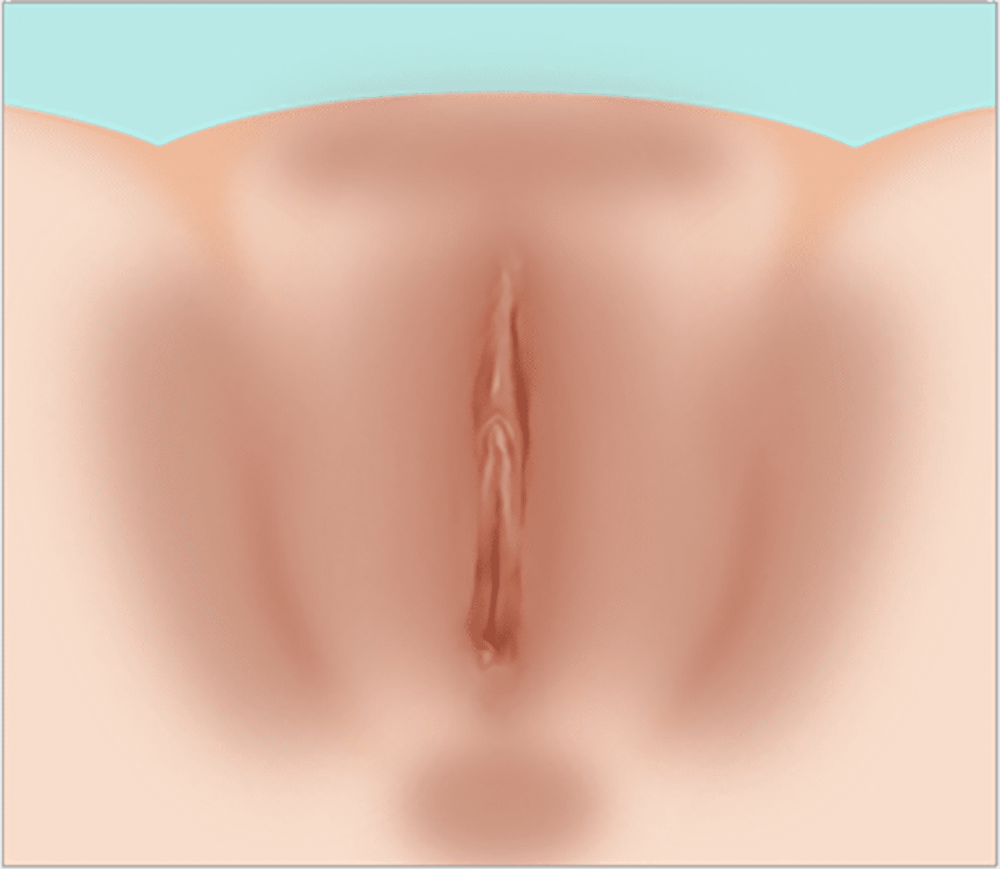
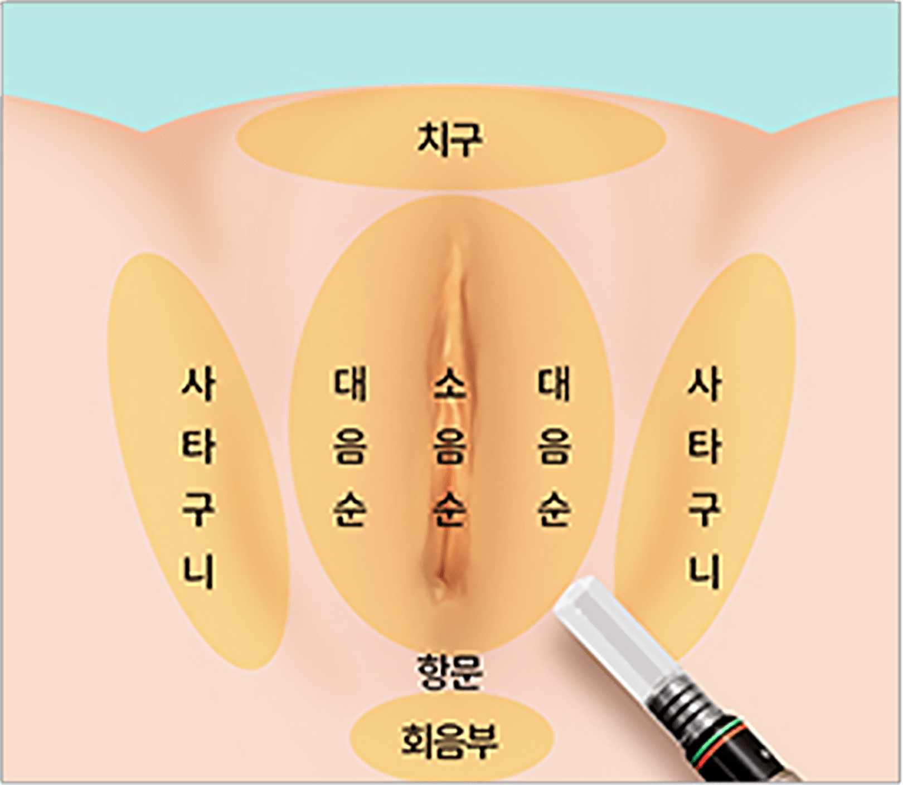
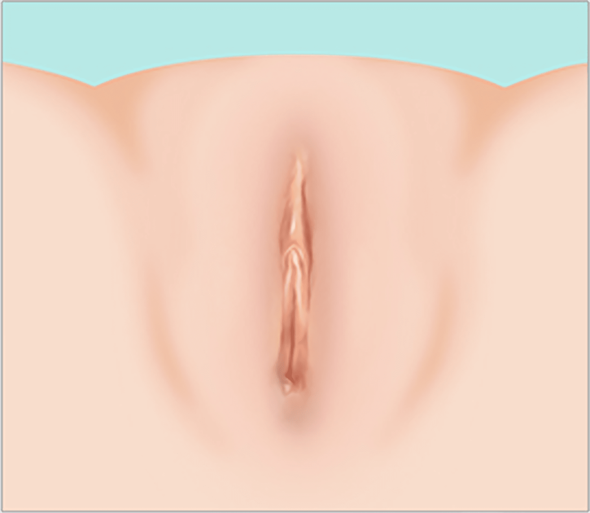
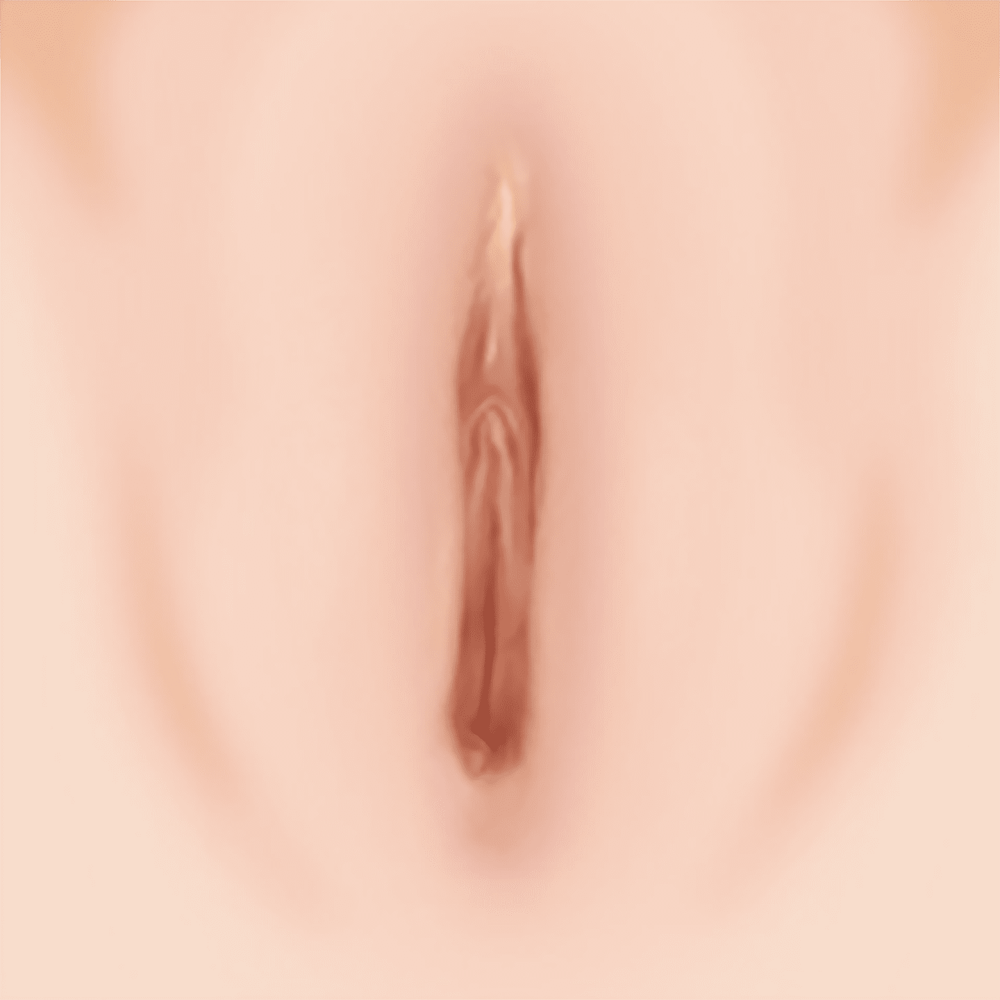
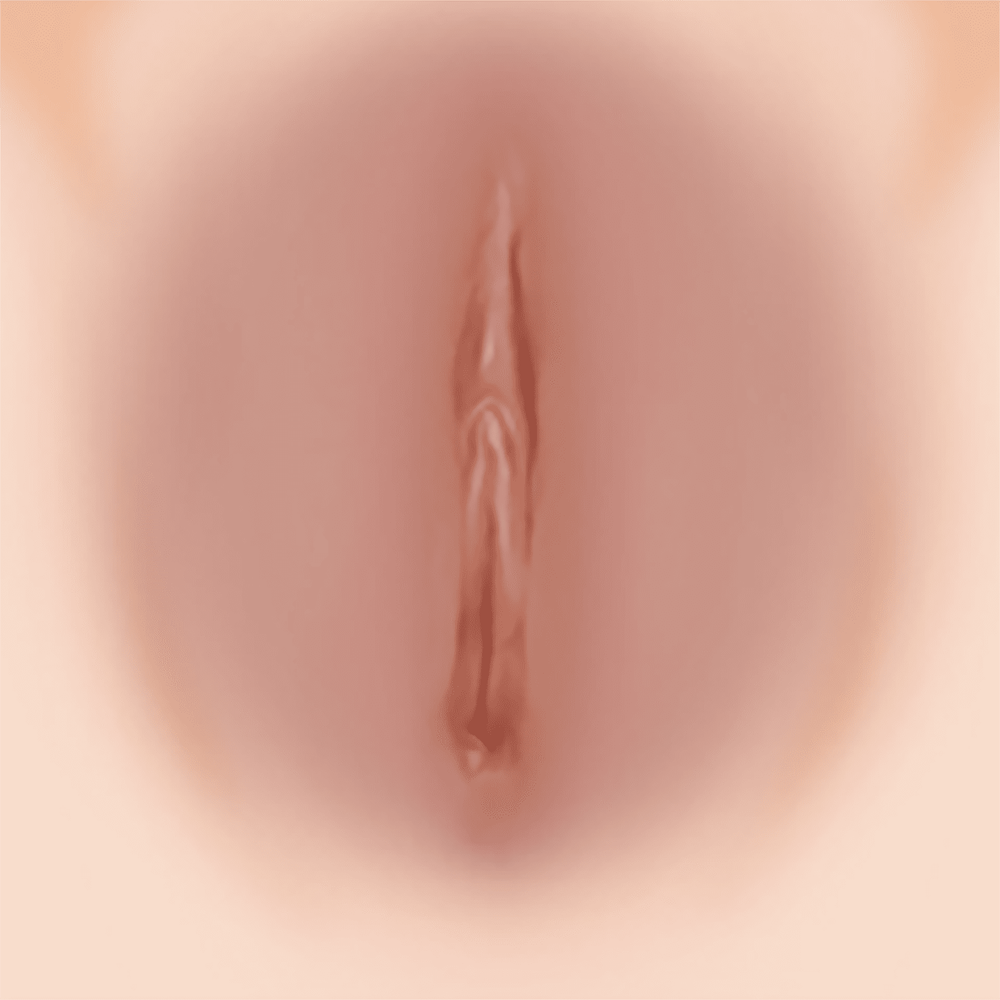
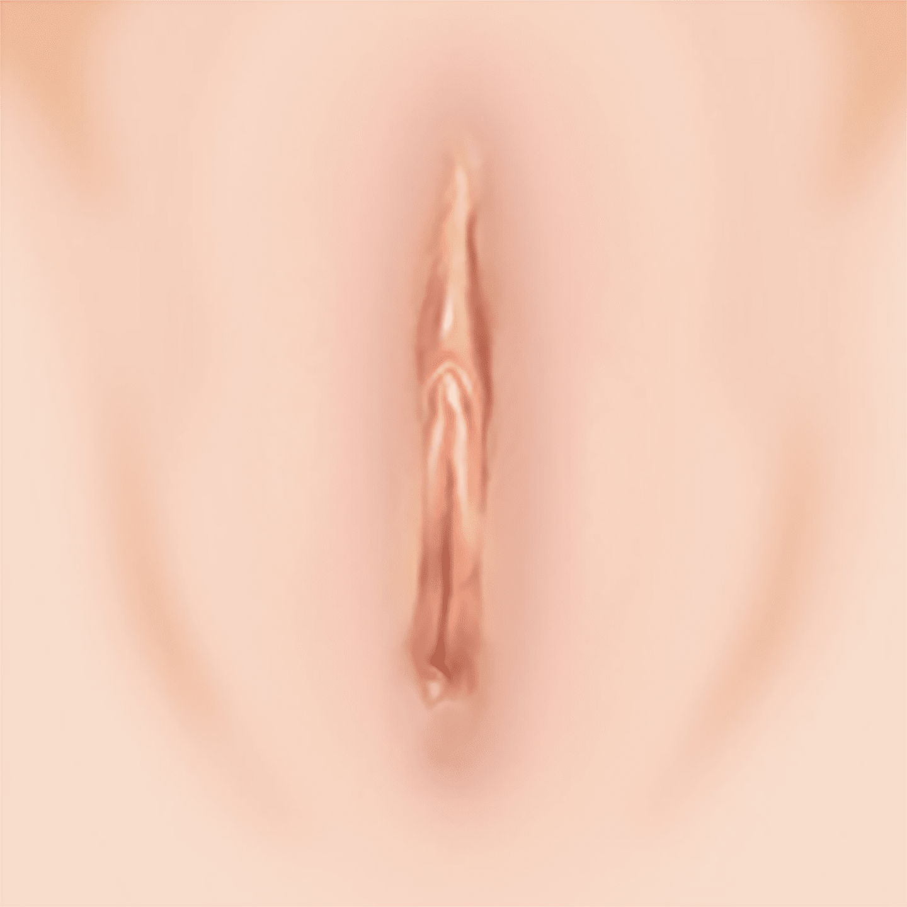

나를 위한 외음부 미백
나를위한 산부인과의
“외음부 미백”
은
의료진의 노하우와 기술력으로
멜라닌 타겟팅 레이저 및
레이저 필링술을 반복 조사하여 피부 재생을 통해
확실한 미백 효과를 얻을 수 있습니다
- 수술시간 15분 내외
-
회복기간
시술 후
일상생활 가능 - 입원여부 없음
-
마취방법
마취크림 도포,
수면마취 가능 - 시술횟수 약 3회
외음부 미백을 위한
뛰어난 효과의 레이저 선택



기존 레이저 장비들은 핑크빛으로 되돌리기까지
많은 시술 횟수가 필요했지만
증상에 맞는 다양한 레이저를 통한
꼼꼼한 시술로 3회 정도 적은 횟수만으로
만족스러운
외음부 미백 결과를 얻을 수 있습니다.
-
색소 병변의
자연스러운 탈락 -
약 3회 정도면
만족스러운 결과 -
색소 침착에
최적화 되어 있는
레이저 기기 -
화이트닝+타이트닝
동시 가능
레이저를 통한 3번의 시술
약 3회 , 적은 시술로 어두웠던 외음부를 밝고 환하게!-
KFDA 정식 인증을 받은
외음부 미백 레이저
장비 보유 -
얼룩없이 균일한 톤으로
미백 진행 -
개개인별 다른 상황에
따라 진행되는
1:1맞춤형 미백 시술 -
약 3회 정도 적은 횟수의
시술로도 밝아지는
미백 효과 -
증상에 따른 다양한 장비,
대학병원급 다양한
장비 보유 -
미백 레이저 시술 후 바로
일상적인 생활 가능
레이저를 통한
미백 시술 과정
-
어둡게 착색된 소음순, 대음순

-
필요한 부위에 레이저 조사

-
레이저 시술 후 미백 효과

나를위한
미백 클리닉
외음부 미백
여성 개인마다 소음순과 대음순의 색은 차이가 있으나
보통 핑크빛을 띄고 있습니다.
그러나 다양한 이유로
탄력을 잃으며 검고 칙칙한 색소침착과 같은 변화가
발생하기 쉬워 심미적 아름다움을 반감시키거나
오해를 사게 되며 자신감 저하의 원인이 되기도 합니다.
여성의 외음부 피부 및 구조, 색소침착 특성에 맞게 고안된
미백 전용 레이저 빔이 피부 조직의 손상, 흉터 걱정 없이
색소침착 원인 병변만을 선택적으로 파괴합니다.
이를 통해 어둡고 칙칙했던 소음순과 대음순 색을
환하고 핑크빛 톤으로 완성해 줍니다.
-
소음순이 검은 경우

-
대음순이 검은 경우

-
외음부 미백을 통한 미백 효과 상승

외음부 미백 대상자
-
어두운 외음부 색으로 자신감이 떨어지며
심리적 위축감이 드는 경우 -
잘못된 외음부 제모로 인해
색소침착이 생긴 경우 -
소음순, 대음순을 핑크빛으로
개선하고 싶은 분 -
다른 의료기관에 미백 시술을 받았으나
만족할 효과를 못 본 경우
외음부 미백은 왜
나를위한 산부인과?


-
풍부한 시술 경험,
고객에게 꼭 맞는
정품 기계와
에너지 최적값 -
6인 산부인과
전문의의
책임시술 -
꼼꼼한 사후관리를
통해
오래가는
시술 효과 -
세심한 진료와
시술을 통한
드라마틱한 효과

프라이빗한 휴식 과 회복
나를위한산부인과에서는 치료를 받는
환자분들이
긴장을 완화하고 편안한
마음으로 쉬실 수 있도록
고급스럽고
편안한 분위기의 1인 회복실을 제공합니다.
미백 시술 후 주의사항
시술 후 주의 사항은 개인 차가 있을 수 있습니다.-
01
물집이 생길 경우 터뜨리지 마시고, 연고를 잘 발라주세요.
(수포는 자연히 흡수됩니다) -
02
전체적으로 생긴 딱지는 자연 탈락할 때까지 놔두셔야 합니다.
강제로 딱지를 제거하면 얼룩이 질 수 있고 회복 기간도 늘어나게
됩니다. -
03
시술 후 7~10일 정도 스크럽, 탕 목욕, 수영 등 물리적인 자극은
피해주세요. -
04
시술 후 진물이 나고 따끔거리며 아플 수 있으나, 정상 반응이므로
걱정하지 마세요.
다만 통증이 심해지고 물집 관리가 어려운 경우
병원으로 내원하여 관리 받으시기 바랍니다. -
05
시술 당일 얼음팩 찜질은 1회당 5분 이상 지속하지 말아주세요.
동상의 위험이 있습니다. -
06
1주일 후 내원하시어 미백 관리 레이저를 받으시면 더 큰 효과를
보실 수 있습니다. -
07
3~4주 간격으로 시술 시 만족도가 가장 높으므로 시술 주기를
잘 지켜주세요.